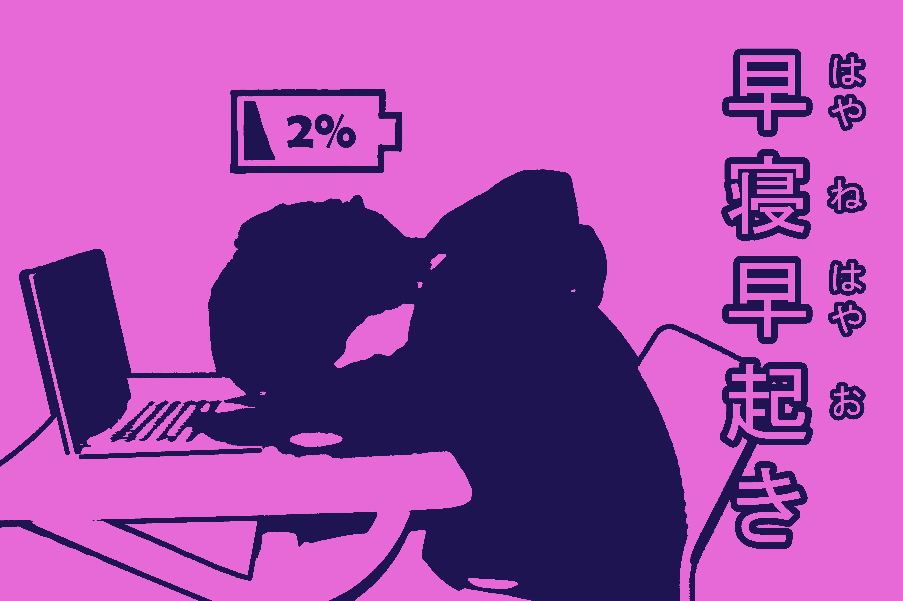
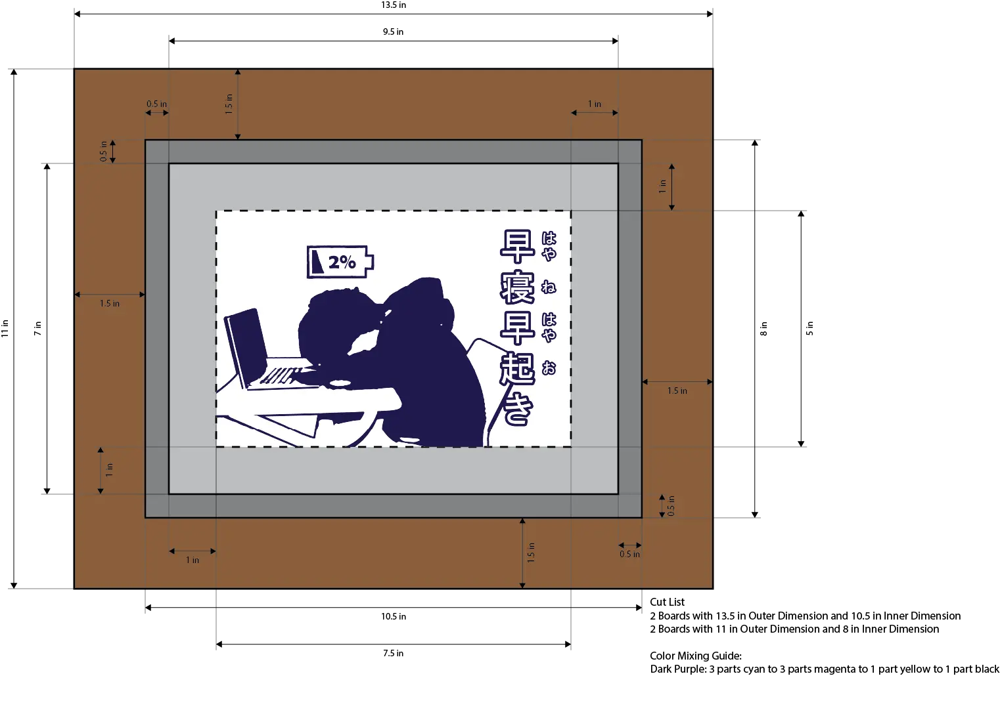

Our Shared Canvas
What Did I Do?
The Shared Canvas project was an art project with the goal of creating an image with a positive message, screenprinting it, and making a documentary about the entire process. I started by thinking about issues that people face, and I landed on poor sleep. I noticed that many of my peers do not sleep enough, and I wanted to make my design change that. I made a design in Adobe Photoshop featuring me sleeping in class, with text that says “早寝早起き” (hayane hayaoki), a Japanese proverb meaning sleep early and wake up early. I then used a vinyl cutter to cut out my design on vinyl, attached it to a frame with mesh, and I put paint through the holes of the design on fabric, paper, etc. I documented this entire process in the documentary below, which I made in Adobe Premiere Pro. I learned how to make two-colored designs in Photoshop using thresholds and other effects, and how Premiere Pro works. I did not have a lot of experience with editing videos, so I learned so much about how video production works while editing my documentary.
What did I learn?
Another paragraph
Gallery

